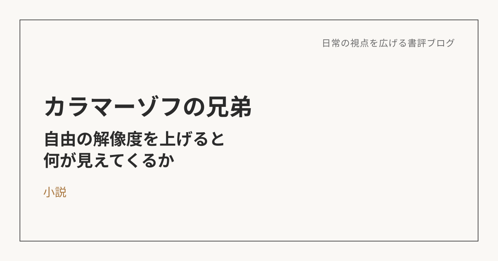
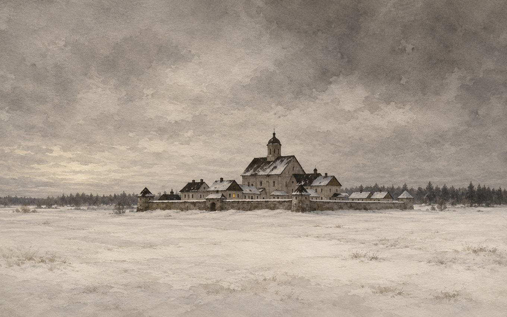

カラマーゾフの兄弟――自由の解像度を上げると、何が見えてくるか
この本について
ドストエフスキーによる本作は、父親殺しをめぐる三兄弟の物語でありながら、信仰・自由・道徳といった大きな問いを内包した長編小説。中でも印象に残ったのが、次男イワンが語る「大審問官」の物語と、末弟アリョーシャの師であるゾシマ長老の教えだった。
大審問官の章――自由と秩序、当時のロシアの物語
「大審問官」の章では、キリストが自由の象徴、教会が権力・秩序の象徴として描かれる。当時のロシアには政教分離という考え方がなく、宗教の教えがそのまま法として機能していた。異を唱える者は迫害され、自由はほとんどなかった。一方で教会側にも理屈はある。人間は自由を与えられても幸せにはなれない、だからこそ秩序をつくって支配することが、結果的に人々を幸福にしているのだという主張だ。ここに、自由と秩序という、現代にも通じる対立構造が浮かび上がる。

現代における自由と秩序――自分ごとに置き換えてみる
現代は民主主義・政教分離・法治国家が前提にあり、当時のロシアとは構造そのものが違う。だから「自由か秩序か」と極端に論じられる場面は少ない。それでも、そのバランスをどう取るかというテーマは、今も形を変えて残っている。個人の自由と社会のルール、情報の自由と監視社会、テクノロジーの発展と倫理規制、自由な競争と福祉国家。どれも、自由と秩序のせめぎ合いだ。
正直に言うと、これまで自由を勝ち取ろうと秩序に強く挑む機会も動機もなかった。むしろ今ある秩序の中で、法律や憲法を前提に、どう自由を楽しむかという発想の方が強い。それでも、あえてイワンの立場になって考えてみると、税制のように稼ぐほど負担が増える仕組みには、損をした気分になって反発したくなる瞬間があるかもしれない。個人のあらゆる情報が国に把握されていく仕組みにも、恩恵をまだ実感できていない分、漠然とした抵抗感がある。極端な話、登山のような個人の趣味に安全確保を理由とした許可制が導入されたら、それも自由と秩序の綱引きになるはずだ。この本をきっかけに、自分がこれまで享受してきた自由の解像度を上げて、秩序とのバランスを考える視点を持てた気がする。
ゾシマ長老の教え――すべてはつながっている
アリョーシャが弟子入りしている修道院の長老・ゾシマは、物語の後半、「すべての人の前に、すべての人の罪を自分のものとして認めよ」と説く。これは、自分が何か罪を犯したという意味ではなく、他人の罪や不幸と自分は無関係ではいられない、という考え方だ。
ゾシマ自身、若い頃に嫉妬から決闘で人を撃ち殺しかけた過去がある。決闘の直前に回心し、相手に謝罪して修道の道に入った。物語の中には、何年も前に人を殺しながら誰にも知られず生きてきた「謎の来訪者」も登場する。彼はゾシマとの対話を通じて苦しんだ末に、自ら罪を公にする。ゾシマの教えは、こうした個人の贖罪の物語から生まれたものだ。
この本全体を貫くのは「父親殺し」という事件だが、実際に手を下したのは一人だとしても、他の兄弟たちの憎しみや無関心が、その空気を作り出していたとも読める。ゾシマの「すべての人に責任がある」という教えは、犯人を一人に特定して裁くという発想そのものへの、ある種の異議申し立てでもある。
この考え方の土台にあるのは、個人の責任ではなく、すべてが因果でつながっている中で責任が生まれるという発想だ。仏教の「縁起」、儒教の「仁」、道教の「無為自然」など、東洋哲学の思想ともかなり近いところにある。人間・自然・地球、すべてが因果でつながっていて、個人が単体で存在しているわけではない、という前提がそこにはある。
それでも、当事者になったら――理想と実感のギャップ
この考え方には共感できる部分がある一方、いざ自分が当事者だったらと想定すると、簡単には受け入れきれない側面もある。たとえば、いじめが原因で未成年が命を落とし、主犯格の未成年に実刑判決が出たようなニュースを見ると、その子が悪いのはもちろんとして、そこに至るまでの育った環境や、周囲との関係性が複雑に絡み合っていたはずだと想像してしまい、すべての責任をその子だけに負わせるのは違う気がしてくる。一方で、もし自分の子どもが被害者だったらと考えると、そんな理屈より先に、とにかく厳罰を求めてしまうと思う。自分ごとにするかどうかで、意見や立場が簡単に変わってしまう。それでも、個人だけでなく社会や環境も含めて原因や責任を考えていくべきというスタンスは、持ち続けたいと思っている。
「愛」や「信仰」を、自分の言葉で読み替えてみる
ゾシマ長老の言う「愛」や「信仰」は、そのまま宗教的な意味で受け取ると、自分ごとに落とし込みにくかった。神を信じる、とか、すべての人を愛する、という言葉は、正直ピンと来ない。
でも、ゾシマの教えの土台にある「すべてはつながっている」という前提に立ち返って考え直してみると、少し違う理解ができた。
まず「信仰」について。ゾシマにとっての神は、人格を持った特定の誰かというより、個々の人間を超えた大きなつながりそのものを指しているように読める。だとすれば、「神を信じる」というのは、特定の対象を拝むことではなく、自分ひとりの狭い視点を離れて、もっと大きな全体を見ようとする態度そのものなんじゃないか。宇宙から地球を見下ろすような、俯瞰した視点を持つこと自体が、すでにその態度の実践になっている。そう考えると、「信仰を持つこと」と「俯瞰した視点を持つこと」は、実はかなり近い場所にあるように思えてくる。
「愛」についても同じ理屈で読み替えられる。すべてがひとつながりのものだとしたら、そこから「この人は愛する」「この人は愛さない」と個別に線を引くこと自体、そもそも成り立たない。愛する・愛さないを選別している時点で、まだ「自分」と「他人」を切り離して見ている。全体を一つとして見られたなら、愛はもう選ぶものではなく、最初からそこにあるものになる。
もちろん、実際にすべての人を等しく愛せているかと言われたら、そんなことはない。でも、少なくとも「自分と関係ない誰か」という区切り方そのものを、一度疑ってみることはできる。ゾシマの教えが自分に残したのは、その疑い方だった。
この本を、いまの世界と重ねて読む
この本を読みながら、どうしても頭から離れなかったことがある。ロシアとウクライナの戦争は、いまも続いている。自由と秩序のバランスを問い、「すべての人の前に、すべての人の罪を自分のものとして認めよ」という言葉を生んだのは、他でもないロシアの文学だ。それなのに、いまのロシアという国を見ていると、この古典が積み重ねてきたはずの視点が、あまり活かされていないように感じてしまう。
もちろん、一冊の小説が国の在り方を決めるわけではないし、文学と政治は別の話だという見方もできる。それでも、自国の文化の中に、これほど深く「自由とは何か」「他者の痛みは自分と無関係でいられるのか」を問い続けた蓄積があるのだとしたら、いまこそその蓄積に立ち返る意味があるんじゃないか、と思わずにはいられない。カラマーゾフの兄弟が問い続けたものは、150年近く経ったいまも、答えの出ていない問いのままだ。
※本記事はNotionに書き溜めた読書メモをもとに、AIの編集サポートを受けて構成しています。